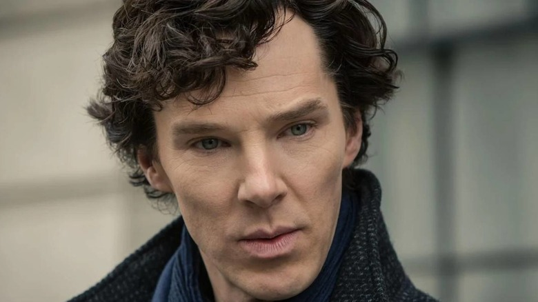

British actor of theater, cinema and television.
Benedict Cumberbatch has been dating actress Olivia Poulet for over 12 years. They broke up in January 2011. For some time, the actor met with designer Anna Jones. They broke up in 2011, a few months after they met. In an interview with The Hollywood Reporter in October 2013, about his private life, Cumberbatch said: “I live in London, alone, I have no children. I hope they will be in the future, but now I work a lot and spend my free time with friends ... ”. On November 5, 2014, in the newspaper The Times, Benedict's parents reported that their son was engaged to Sophie Hunter , whom he had been dating for about a year. On February 14, 2015, they got married, the wedding ceremony took place at the Church of Peter and Paul in Mottistone (Isle of Wight, England). The couple have two sons - Christopher Carlton Cumberbatch (born 01.06.2015) and Hal Auden Cumberbatch (born 03.03.2017).
The most famous films where he acted: